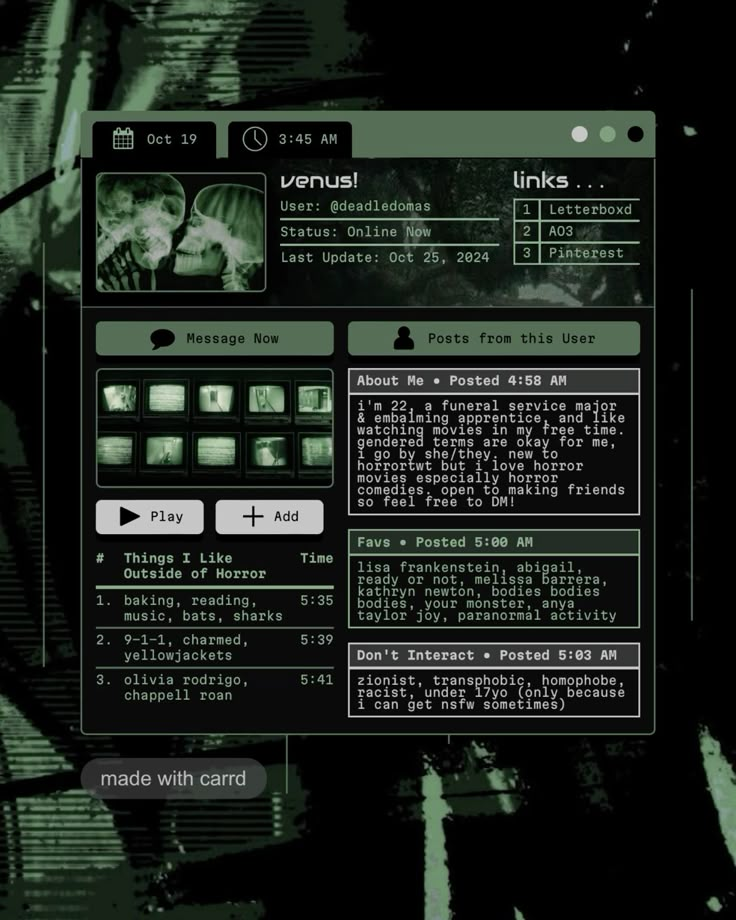

Cómo diseñar para la oscuridad sin perder legibilidad
Un sistema low-key no es ausencia de color: es jerarquía tonal extrema. Si todo está oscuro, la estructura debe vivir en líneas, ritmo y textura.
Leer entradaRegistro 03 // Luz Casi Cero
Este blog vive en la frontera entre interfaz y ruina visual: sombras aplastadas, contraste brutal y textura de monitor viejo.

Un sistema low-key no es ausencia de color: es jerarquía tonal extrema. Si todo está oscuro, la estructura debe vivir en líneas, ritmo y textura.
Leer entradaNegro puro para peso emocional, verdes desaturados para continuidad y un acento fosforescente mínimo para orientar la mirada.
Leer entradaCuando el peso visual cae al centro, las líneas horizontales introducen estabilidad técnica y una atmósfera de consola analógica.
Leer entradaMANIFIESTO
Cada bloque, borde y transición responde a una idea: oscuridad útil. Aquí la UI no brilla para decorar; brilla para sobrevivir en la penumbra.